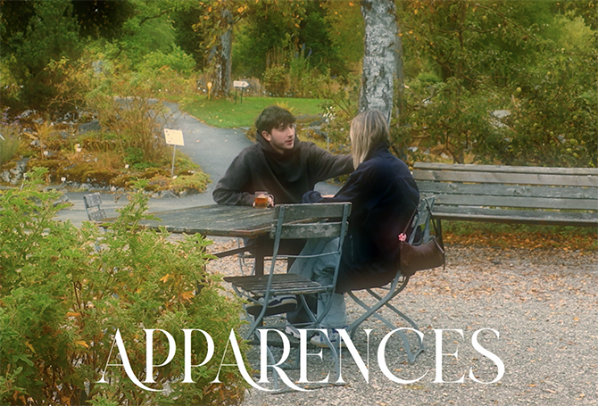

Apparences
Pour ce projet, nous étions 3 et nous avons réalisé une vidéo en prenant en compte les types de cadrage et leur façon de raconter quelque chose. Dans «Apparences», nous parlons des violences conjugales qui sont souvent invisibles si nous ne faisons pas partie du cercle privé. Il y a deux parties différentes : l’une où nous observons le couple de l’extérieur, et l’autre où nous entrons dans sa sphère personnelle.
